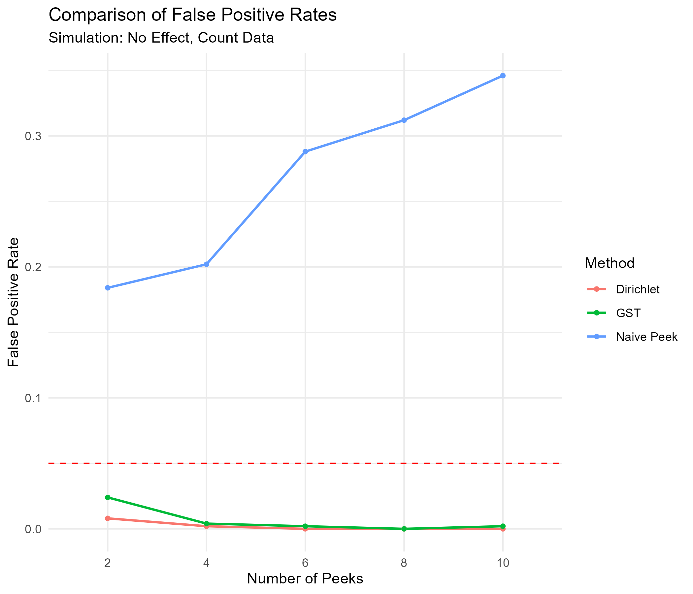

A/B testing is a cornerstone of data-driven decision-making, allowing business to evaluate new features and optimize user experiences. Whether it’s tweaking a website’s layout, or testing new content recommendations, A/B testing provides insightful feedback on what works and what doesn’t.
Conventionally, A/B tests follow a fixed sample size approach—running until a set number of users have been exposed before analyzing results. However, waiting for the full sample can be inefficient and costly in many real-world scenarios.
For example, if a new recommendation algorithm significantly boosts engagement, delaying its rollout until the test is complete means lost revenue and user satisfaction. In contrast, if an update unintentionally promotes harmful content, running the test to completion could expose more users to harm before corrective action is taken.
This is where sequential testing and early stopping come in. Instead of waiting for the full sample, this allows continuous monitoring of test results. Experiments can stop early when there’s enough evidence to confirm a winner—or to prevent harm.
Peeking Problem
The question then becomes: what counts as “enough” evidence?
If we repeatedly apply fixed-sample-size tests (e.g. t-tests, Kolmogorov-Smirnov test, Mann-Whitney tests) at multiple points until significance is reached, we increase the likelihood of false positives—a phenomenon known as the peeking problem.
To illustrate, suppose we set our significance level at \(\alpha=0.05\), meaning there’s a 5% chance of detecting a significant effect when no effect exists. If we check results once at the end of the test, this error rate holds. However, if we peek multiple times (\(k\) peeks), the probability of making at least one false positive error grows exponentially, following:
This becomes even clearer with a simulation. Assuming no real difference between treatment and control, I generated 1000 observations per group and run 100 simulations. At regular checkpoints every 10 observations, I applied t-tests, Mann-Whitney tests, and Kolmogorov-Smirnov tests, recording how often their p-values fall below \(\alpha=0.05\).
In the plot below, red lines represent paths of simulated p-values, while black dots indicate points where significance was falsely detected. Y axis is log-transformed to those black dots to be seen. Across all three tests, the false positive rates are highly inflated—30% for t-tests, 32% for Mann-Whitney tests, and 26% for Kolmogorov-Smirnov tests—far exceeding the 5% threshold.
Code
set.seed(123)library(tidyverse)# Simulation parametersn_simulations<-100n_observations<-1000alpha<-0.05checkpoints<-seq(10, n_observations, by=10)# Store p-valuesp_values_t<-matrix(NA, nrow=n_simulations, ncol=length(checkpoints))p_values_mw<-matrix(NA, nrow=n_simulations, ncol=length(checkpoints))p_values_ks<-matrix(NA, nrow=n_simulations, ncol=length(checkpoints))false_positive_count_t<-0false_positive_count_mw<-0false_positive_count_ks<-0# Run A/A test simulationsfor(simin1:n_simulations){control<-rnorm(n_observations, mean=0, sd=1)treatment<-rnorm(n_observations, mean=0, sd=1)for(iinseq_along(checkpoints)){n<-checkpoints[i]p_values_t[sim, i]<-t.test(control[1:n], treatment[1:n])$p.valuep_values_mw[sim, i]<-wilcox.test(control[1:n], treatment[1:n])$p.valuep_values_ks[sim, i]<-ks.test(control[1:n], treatment[1:n])$p.value}if(any(p_values_t[sim, ]<alpha))false_positive_count_t<-false_positive_count_t+1if(any(p_values_mw[sim, ]<alpha))false_positive_count_mw<-false_positive_count_mw+1if(any(p_values_ks[sim, ]<alpha))false_positive_count_ks<-false_positive_count_ks+1}# Compute false positive ratesfalse_positive_rate_t<-false_positive_count_t/n_simulationsfalse_positive_rate_mw<-false_positive_count_mw/n_simulationsfalse_positive_rate_ks<-false_positive_count_ks/n_simulations# Convert to long format for visualizationdf_t<-as.data.frame(p_values_t)colnames(df_t)<-checkpointsdf_t$Simulation<-1:n_simulationsdf_long_t<-df_t%>%pivot_longer(cols =-Simulation, names_to ="Sample_Size", values_to ="P_Value")%>%mutate(Sample_Size =as.numeric(Sample_Size))# Plot the peeking problemggplot(df_long_t, aes(x=Sample_Size, y=P_Value, group=Simulation))+geom_line(color="red", alpha=0.3)+geom_point(data=df_long_t%>%filter(P_Value<0.05), aes(x=Sample_Size, y=P_Value), color="black", size=1)+geom_hline(yintercept=0.05, linetype="dashed", color="black")+scale_y_log10()+labs(title="Illustration of the Peeking Problem", x="Sample Size", y="p-value")+theme_minimal()ggsave("peeking_illustration.png", width =7, height =6)
Sequential Testing
How do sequential testing methods reduce false positive rates while allowing early stopping when evidence is strong? This table below provides a non-exhaustive overview of different sequential testing approaches, focusing on how they determine when evidence is sufficient to stop, and how they mitigate Type I error in the meantime.
Method
Example
Stopping Criterion
Control Type I Error
Likelihood Ratio-Based Methods
Wald’s Sequential Probability Ratio Test (SPRT), 2-SPRT, Sequential Triangular Test
Compare likelihood ratios of \(H_0\) vs. \(H_1\) and stop when it crosses a predefined threshold
Set decision boundaries (A, B) for likelihood ratios
Preplanned interim analyses adjust \(\alpha\) and stop when a checkpoint reaches significance
Preallocate \(\alpha\) over checkpoints (e.g. constant \(\alpha\), from conservative to liberal, dynamic adjustment based on observed data)
Distribution-Based Testing
Confidence Sequences (Sequential P-Values) for Continuous or Count Data
Monitor distributional changes and stop when distribution-difference bands exclude zero
Construct confidence consequences that shrink dynamically, ensuring anytime-valid inference without alpha-spending
Likelihood ratio-based and group sequential testing methods rely on classical statistical tests that compare means or proportions over time. They control false positive error rates by predefining when to analyze the data—either by setting decision boundaries or by adjusting significance levels (\(\alpha\) ) at interim checkpoints. However, both approaches require assumptions about the underlying data distribution and a predefined schedule for checkpoints.
In contrast, distribution-based testing tracks entire distributions rather than just summary statistics like means or proportions. This approach is more generalizable without depending on assumptions about finite moments—an issue for mean-based tests when applied to heavy-tailed distributions like the Cauchy. Additionally, distribution-based methods allow for continuous monitoring without the need for preplanned interim analyses or alpha-spending adjustments, making them particularly effective for real-time decision making.
Illustration of Early Stopping
To demonstration how sequential testing methods enable early stopping, I conducted a simulation reflecting a common A/B testing scenario: user click behavior. The goal is to compare sequential testing approaches—Group Sequential Testing (GST) and Distribution-Based Testing using sequential p-values—against a fixed sample size approach determined via traditional power analysis.
I consider a simple two-arm experiment where users are randomly assigned to either a control or treatment group. The treatment effect is assumed to increase the probability of a user clicking by 5 percentage points—from 30% in control to 35% in treatment.
Here’s how each sequential testing method works:
Group Sequential Testing (GST)
I assume 10 interim peeks and apply Pocock’s alpha spending function, which equally distributes the total significance level (α=0.05) across all peeks. The test stops at the first interim check where the treatment effect reaches significance.
Distribution-Based Testing
Click rates are monitored continuously at every observation, without predefined checkpoints or alpha spending. The test stops as soon as the Dirichlet sequential p-value falls below \(\alpha = 0.05\)
As shown in the graph below, both sequential testing methods stopped early, requiring fewer samples to detect the effect compared to a fixed-sample approach with no interim analysis.
Code
library(pwr)# Define clicking probabilitiespA<-0.30pB<-0.35# Cohen's h for difference in two proportionscohen_h<-function(p1, p2){2*(asin(sqrt(p1))-asin(sqrt(p2)))}effect_size_h<-cohen_h(pA, pB)effect_size_h# Compute required sample sizepower_calc<-pwr.2p.test(h =effect_size_h, sig.level =0.05, power =0.8, alternative ="two.sided")power_calc# ~1376 required per group# Generate synthetic click data with cumulative counts per armgenerate_click_data<-function(max_n, pA, pB){A_raw<-rbinom(max_n, size =1, prob =pA)B_raw<-rbinom(max_n, size =1, prob =pB)data.frame( A_clicks =cumsum(A_raw), B_clicks =cumsum(B_raw), Sample_Size =1:max_n)}# Group sequential test with Pocock functiongst_test<-function(counts, check_index, total_checks, alpha){alpha_check<-alpha/total_checkstotal<-sum(counts)if(total<2)return(FALSE)# 2-proportion z-testpA<-counts[1]/totalpB<-counts[2]/totalp_hat<-(counts[1]+counts[2])/(2*total)se<-sqrt(p_hat*(1-p_hat)*(1/counts[1]+1/counts[2]))if(se==0)return(FALSE)z_stat<-(pA-pB)/sep_val<-2*(1-pnorm(abs(z_stat)))return(p_val<alpha_check)}# Distribution-based sequential p-values, adapted from https://gist.github.com/michaellindon/5ce04c744d20755c3f653fbb58c2f4ddsequential_p_value<-function(counts, assignment_probabilities=c(0.5, 0.5),dirichlet_alpha=NULL, alpha=0.05){counts<-as.numeric(counts)if(is.null(dirichlet_alpha)){dirichlet_alpha<-100*assignment_probabilities}total_counts<-sum(counts)alpha_sum<-sum(dirichlet_alpha)lm1<-(lgamma(total_counts+1)-sum(lgamma(counts+1))+lgamma(alpha_sum)-sum(lgamma(dirichlet_alpha))+sum(lgamma(dirichlet_alpha+counts))-lgamma(alpha_sum+total_counts))lm0<-lgamma(total_counts+1)+sum(counts*log(assignment_probabilities)-lgamma(counts+1))pval<-exp(lm0-lm1)return(min(1, pval)<alpha)}simulate_early_stopping<-function(max_n, alpha, pA, pB, num_gst_peeks=10){df<-generate_click_data(max_n, pA, pB)peeking_points<-seq(ceiling(max_n/num_gst_peeks), max_n, length.out =num_gst_peeks)gst_stop<-NAdirichlet_stop<-NAeffect_est<-numeric(max_n)ci_lower<-numeric(max_n)ci_upper<-numeric(max_n)for(iinseq_len(max_n)){counts<-c(df$A_clicks[i], df$B_clicks[i])effect_est[i]<-log((counts[2]+1)/(counts[1]+1))se<-sqrt((1/(counts[1]+1))+(1/(counts[2]+1)))ci_lower[i]<-effect_est[i]-1.96*seci_upper[i]<-effect_est[i]+1.96*seif(i%in%peeking_points&&is.na(gst_stop)){idx<-which(peeking_points==i)if(gst_test(counts, idx, num_gst_peeks, alpha)){gst_stop<-i}}if(is.na(dirichlet_stop)){if(sequential_p_value(counts, c(0.5, 0.5), alpha =alpha)){dirichlet_stop<-i}}}if(is.na(gst_stop))gst_stop<-max_nif(is.na(dirichlet_stop))dirichlet_stop<-max_nlist( df =data.frame( Sample_Size =1:max_n, Effect_Est =effect_est, CI_Lower =ci_lower, CI_Upper =ci_upper), gst_stop =gst_stop, dirichlet_stop =dirichlet_stop)}results<-simulate_early_stopping( max_n =2000, alpha =0.05, pA =0.30, pB =0.35, num_gst_peeks =10)df<-results$dfgst_stop<-results$gst_stopdirichlet_stop<-results$dirichlet_stopggplot(df, aes(x =Sample_Size, y =Effect_Est))+geom_ribbon(aes(ymin =CI_Lower, ymax =CI_Upper), fill ="blue", alpha =0.2)+geom_line(color ="blue")+geom_hline(yintercept =0, linetype ="dotted", color ="black")+geom_vline(xintercept =gst_stop, linetype ="dashed", color ="red")+geom_vline(xintercept =dirichlet_stop, linetype ="dashed", color ="green")+geom_vline(xintercept =1376, linetype ="dashed", color ="black")+annotate("text", x =gst_stop, y =max(df$Effect_Est), label ="GST Stop", color ="red", vjust =-1, hjust =1.2, size =4)+annotate("text", x =dirichlet_stop, y =max(df$Effect_Est), label ="Dirichlet Stop", color ="green", vjust =-1, hjust =0, size =4)+annotate("text", x =1376, y =max(df$Effect_Est), label ="Original Stop", color ="black", vjust =-1, hjust =0, size =4)+labs( title ="Illustration of Early Stopping", subtitle ="Simulation: pA=0.30, pB=0.35, alpha=0.05", x ="Sample Size", y ="Estimated Log Click Rate Difference")+theme_minimal()ggsave("illustration_early_stopping.png", width =7, height =6)
Illustration of Mitigating False Positives
Sequential testing not only improves efficiency by enabling early stopping when a true effect exists, but it also helps mitigate false positives. To evaluate how different methods control false positive rates, I conducted another simulation under the same user clicking behavior setting—this time assuming no true effect. The goal is to track how false positive rates change as the number of peeks increases.
In addition to Group Sequential Testing (GST) and Distribution-Based Testing, I compare their performance against Naive Peeking, where a standard hypothesis test (e.g., a two-proportion z-test) is applied at each interim analysis without any correction for multiple looks.
As presented in the graph below, Naive Peeking quickly inflates false positives beyond 0.05, worsening as more peeks occur. In contrast, both GST and Distribution-Based Testing effectively control Type I error, keeping false positives at or below 0.05. Distribution-Based Testing provides even tighter error control, ensuring anytime-valid inference while allowing continuous monitoring.

Code
naive_test<-function(counts){A_clicks<-counts[1]B_clicks<-counts[2]total_clicks<-A_clicks+B_clicksif(total_clicks<2){return(FALSE)}pA<-A_clicks/total_clickspB<-B_clicks/total_clicksp_hat<-(A_clicks+B_clicks)/(total_clicks+total_clicks)z_num<-pA-pBz_den<-sqrt(p_hat*(1-p_hat)*(1/total_clicks+1/total_clicks))if(z_den==0){return(FALSE)}z_stat<-z_num/z_denp_val<-2*(1-pnorm(abs(z_stat)))(p_val<0.05)}simulate_one_run<-function(n_users=2000, num_peeks=10, alpha=0.05, pA=0.3, pB=0.3){df<-generate_click_data(n_users, pA, pB)step<-floor(n_users/num_peeks)if(step<1)stop("num_peeks too large for n_users")peeking_points<-seq(step, n_users, by =step)total_checks<-length(peeking_points)reject_dirichlet<-FALSEreject_pocock<-FALSEreject_naive<-FALSEfor(iin1:n_users){counts<-c(df$A_clicks[i], df$B_clicks[i])if(!reject_dirichlet&&sequential_p_value(counts, c(0.5, 0.5), alpha =alpha)){reject_dirichlet<-TRUE}if(any(peeking_points==i)&&!reject_pocock){idx<-which(peeking_points==i)if(gst_test(counts, idx, total_checks, alpha)){reject_pocock<-TRUE}}if(any(peeking_points==i)&&!reject_naive){if(naive_test(counts)){reject_naive<-TRUE}}if(reject_dirichlet&&reject_pocock&&reject_naive)break}list( dirichlet =reject_dirichlet, pocock =reject_pocock, naive =reject_naive)}num_peeks_vec<-seq(2, 10, 2)n_sims<-500n_users<-2000alpha<-0.05results<-data.frame(num_peeks =integer(), method =character(), fp_rate =numeric())for(npinnum_peeks_vec){rejections<-replicate(n_sims, {res<-simulate_one_run(num_peeks =np, alpha =alpha)c(dirichlet =res$dirichlet, pocock =res$pocock, naive =res$naive)})rejections<-as.data.frame(t(rejections))fp_rates<-colMeans(rejections)results<-bind_rows(results,data.frame(num_peeks =np, method ="Dirichlet", fp_rate =fp_rates["dirichlet"]),data.frame(num_peeks =np, method ="GST", fp_rate =fp_rates["pocock"]),data.frame(num_peeks =np, method ="Naive Peek", fp_rate =fp_rates["naive"]))}ggplot(results, aes(x =factor(num_peeks), y =fp_rate, color =method, group =method))+geom_line(size =0.8)+geom_point(size =1.2)+geom_hline(yintercept =0.05, linetype ="dashed", color ="red")+labs( title ="Comparison of False Positive Rates", subtitle ="Simulation: No Effect, Count Data", x ="Number of Peeks", y ="False Positive Rate", color ="Method")+theme_minimal()ggsave("false_positive_comparison.png", width =7, height =6)
Summary
As we have seen, sequential testing strikes a balance between efficiency and accuracy, enabling faster effect detection while controlling false positives. Among these methods, distribution-based testing offers the most flexibility, without the need for assumptions about distribution shape, predefined interim checks, or alpha-spending functions.
References:
Netflix Technology Blog. 2019. Improving Experimentation Efficiency at Netflix with Meta Analysis and Optimal Stopping [link]
Aaditya Ramdas. 2019. “Foundations of Large-Scale”Doubly-Sequential” Experimentation” [link]
Netflix Technology Blog. 2024. Sequential A/B Testing Keeps the World Streaming Netflix Part 1: Continuous Data [link]
Netflix Technology Blog. 2024. Sequential A/B Testing Keeps the World Streaming Netflix Part 2: Counting Processes [link]